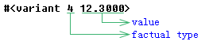

(vlax-make-variant [value] [type])
Creates a variant type data.
This function returns a variant type data:
If only the "value" parameter is specified, the data is initialized with the specified value, and its factual type depends on the specified value:
Value Type nil vlax-vbEmpty. :vlax-null vlax-vbNull . integer vlax-vbLong. real vlax-vbDouble. string vlax-vbString. VLA-object vlax-vbObject. :vlax-true, :vlax-false vlax-vbBoolean. safearray vlax-vbArray. - If the "value" parameter equals nil and the "type" parameter is specified, the data is initialized with the default value which depends on the "type" parameter:
Type Initial value numbers 0.000000 strings 0. booleans 0. Variants vlax-vbEmpty(Uninitialized). -
If both parameters are specified, the system automatically transforms the "value" parameter to the "type" datatype, then initializes the data with the "value" parameter after transforming, and the data's factual type depends on the "type" parameter.
The function accepts two optional arguments:
Argument Meaning value The value to be assigned to the variant. type The type of variant. It can be one of the following constants:
- vlax-vbEmpty (0)Uninitialized (default value)
- vlax-vbNull (1)Contains no valid data
- vlax-vbInteger (2)Integer
- vlax-vbLong (3)Long integer
- vlax-vbSingle (4)Single-precision floating-point number
- vlax-vbDouble (5)Double-precision floating-point number
- vlax-vbString (8)String
- vlax-vbBoolean (11)Boolean
- vlax-vbArray (8196)Array
This parameter can be a string constant or an integer constant(in parentheses), but the integer constant aren't suggested using for the lisp codes' compatibility.
Examples
| Code | Result |
|---|---|
| (vlax-make-variant 12.3 vlax-vbSingle) |
 |
Tell me about...
(vlax-make-safearray type '(l-bound . u-bound) ['(l-bound . u-bound)...])